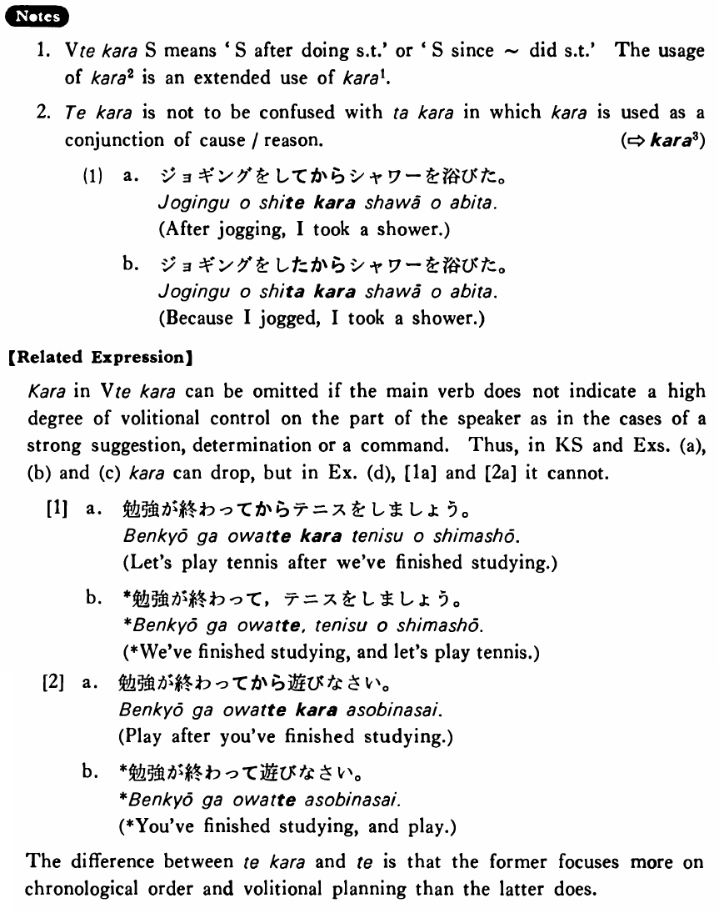

から (2) (B. 177)
- (ks).
- 雪子は晩ご飯を食べてから映画に行った・行きました。
- After eating her supper, Yukiko went to a movie.
- (a).
- 私は友達に電話してからうちを出た。
- I left home after making a call to my friend.
- (b).
- ジョーンズさんはいつもシャワーを浴びてから寝ます。
- Mr. Jones always goes to bed after taking a shower.
- (c).
- 私達がこの家を買ってからもう十年になる。
- It's already been ten years since we bought this house.
- (d).
- 二年前に交通事故を起こしてから、ミラーさんは車に乗らないようにしています。
- Since he caused a traffic accident two years ago, Mr. Miller has been trying not to drive a car.
